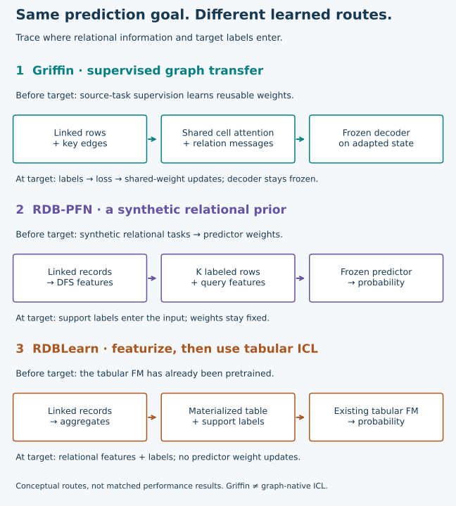
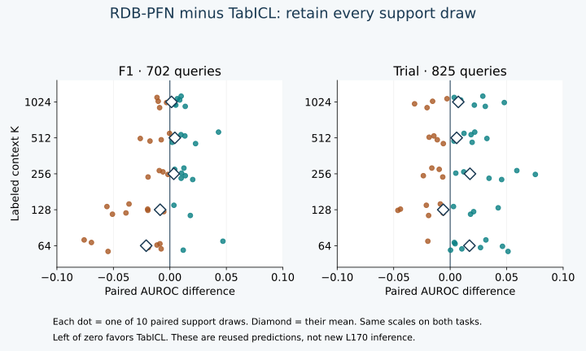
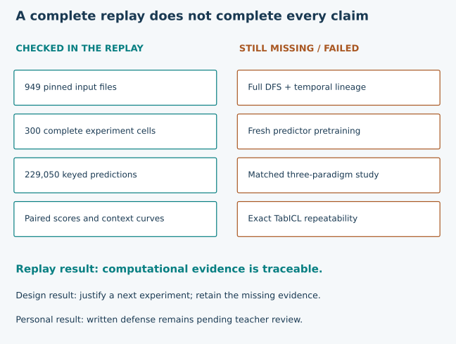

Year 5 · Quarter 1 · Lesson 170
Defend a relational foundation-model design
Your task: write a defensible design for one relational prediction problem. Choose a representation, a pretrained predictor and a target-adaptation rule. Attach evidence for the claims you make, and name an experiment that could change your mind.
Reading route. First recall the three decisions below. Then replay the evidence, inspect where the comparison reverses, and complete the design template. The core reading takes about 25 minutes; leave a separate session for the lab and written defense. Preparation is complete only when the artifacts pass their checks. Your checkpoint remains PENDING_WRITTEN_DEFENSE until you submit your own work for review.
Open the lab · Student notebook · Reference solution · Design template · Quick reference
1 · From measuring a curve to making a decision¶
Lesson 167 separated representation, pretraining and adaptation. Lesson 168 added a second task. Lesson 169 varied context size while keeping pretrained weights fixed. Those experiments tell us what happened under their protocols. They do not automatically choose an architecture for a new database.
In plain terms. A design document connects “what the system must do” to “why this method is a reasonable starting point” and “what would make us reject it.” A small measured gain can justify another experiment without justifying deployment.
Prerequisite recap. A relational database stores entities and events in linked tables. A foreign key names a related row. A query key is the pair (entity, cutoff): who receives a prediction, and when. Features must use information available by that cutoff. A label describes the future outcome to predict. A training label may be used only after its outcome window has closed and it is available.
A foundation model has reusable pretrained parameters. Pretraining learns those parameters before the target task. Adaptation makes the predictor useful on the target task. Adaptation can update weights or supply labeled examples as inputs. In-context learning (ICL) uses such examples while keeping predictor weights fixed. A support set is that collection of labeled examples. Its size is K. These definitions let us compare methods without treating every use of “foundation model” as the same mechanism. Vogel vision paper, Griffin §4, RDB-PFN v5.
2 · Three independent design decisions¶
Representation: what information reaches the predictor? A graph representation retains rows and key links, then learns how neighboring rows communicate. A materialized feature table summarizes linked records into columns before prediction. Deep Feature Synthesis (DFS) composes joins, transformations and aggregations into those columns. Here “deep” describes compositions; it does not imply a deep neural encoder.
Prior: what was learned before this task? A prior is a learned preference for certain relationships before observing target labels. Griffin learns transferable graph and cell operations through source-task supervision. RDB-PFN learns from synthetic tasks with relational structure. RDBLearn uses an already pretrained tabular predictor after relational featurization. Griffin §§3–4, RDB-PFN §§4–5, RDBLearn §3.
Adaptation: where do target labels enter? Griffin's supervised transfer route fine-tunes weights on a target task. The RDB-PFN and tabular-ICL routes studied here feed support labels to a fixed predictor. “Training-free” describes the target-time use of the pretrained predictor, not an absence of pretraining, labels, preprocessing or computational cost.
Which Griffin weights change? The shared cell-reading and graph-message operations adapt; the released input encoders and task decoder stay frozen. Classification compares the adapted root state with frozen label vectors. This is why the diagram ends with a frozen decoder even though the overall target-task route performs fine-tuning. Return to Lesson 164's architecture for the complete path.


| Candidate | Why consider it? | What could break the choice? | Evidence we actually have |
|---|---|---|---|
| Griffin graph transfer | Learned messages can preserve relationships that fixed aggregates discard | Supervised adaptation cost; insufficient labels; temporal graph errors | L164 mechanism/source checks; fresh selected experiment stopped at its budget gate |
| RDB-PFN | Synthetic relational tasks may provide a useful prior for small labeled contexts | Prior mismatch; lost information in DFS; unverified exposure lineage | Complete selected released-checkpoint evidence on two tasks across five contexts |
| RDBLearn approach | Relational aggregates plus an existing tabular ICL predictor offer a direct baseline | Aggregations may omit the relevant relation; feature generation may dominate cost | Primary-paper evidence; our DFS + TabICL arm illustrates the approach but is not the RDBLearn pipeline |
These are candidate reasons and failure hypotheses, not a ranking across three matched implementations. Griffin is graph-centric, but its fine-tuning route is not graph-native ICL. KumoRFM in Lesson 165 provides a separate graph-native ICL comparison; its proprietary historical pipeline was not reproduced. You do not need the optional 165b, 166b or 170b lessons to complete this checkpoint.
Worked example — where the label goes. Suppose a fixed predictor reads 512 past labeled driver queries and predicts 702 new queries. It takes zero gradient steps. This is labeled-context adaptation, not a zero-label experiment. By contrast, a supervised model that updates its weights on those labels uses target training. The lab's classifier covers this supervised setting; it does not classify unsupervised or self-supervised target adaptation.
3 · Reproduce the evidence before using it¶
Our named experiment is the complete saved-evidence replay of L169's selected RDB-PFN v5 Tables 6–10. The selection contains all five contexts (64, 128, 256, 512, 1024), all ten support seeds, all three fixed models, and every test query on rel-f1/driver-dnf (702) and rel-trial/study-outcome (825). This gives 300 evaluations and 229,050 probabilities. Paper Appendix A.3 and Tables 6–10.
Held fixed: released checkpoints, feature arrays, preprocessing, test populations and source versions. Within each task/context/seed, all models receive the same support identities. The third model is the single-table-pretrained RDB-PFN ablation. Varied: context size and predictor. Measured: ranking quality and paired differences. Support sets at different K are independently drawn by the source sampler; equal seed numbers do not make them nested prefixes. Nothing in this experiment varies pretraining scale.
AUROC is the probability that a positive example receives a higher score than a negative example, giving half credit to ties. It is a ranking metric, not a measure of probability calibration. We align predictions by full query key before scoring. The local audit also checks hashes, original per-run receipts, support labels, raw labels and the complete experiment grid. A separate sklearn calculation checks all 300 scores.
Scope check. All 300 evaluations are reused in L170. Of these, 240 were fresh in L169 and 60 came from L166/L168. L170 runs no new inference or training. The full replay is executable and complete for this selection; whole-paper reproduction and fresh pretraining remain NOT_RUN. Exact protocol and commands.
Pair first, then average¶
Worked example. On one task, suppose model A scores .72 and .68 on seeds 0 and 1, while B scores .70 and .69. Paired gains are +.02 and −.01. The mean gain is +.005; A wins on only one of the two draws. Keeping the pairs exposes a reversal that a single mean conceals.
For each task and K, calculate ten differences Δs = AUROC(RDB-PFN, s) − AUROC(TabICL, s). The symbol s indexes the support draw. Average those differences, count how many are positive, and compute their sample standard deviation, the square root of squared deviations from the mean divided by 9. This describes sensitivity to support draws on a fixed task. It is not a confidence interval over unseen databases.


| Context K | F1 gain ± SD | Positive draws | Trial gain ± SD | Positive draws |
|---|---|---|---|---|
| 64 | -0.02098 ± 0.03744 | 2/10 | +0.01707 ± 0.02199 | 9/10 |
| 128 | -0.00863 ± 0.05041 | 3/10 | -0.00612 ± 0.02829 | 4/10 |
| 256 | +0.00343 ± 0.01228 | 6/10 | +0.01752 ± 0.03414 | 6/10 |
| 512 | +0.00437 ± 0.01981 | 6/10 | +0.00574 ± 0.01765 | 6/10 |
| 1024 | +0.00142 ± 0.00915 | 6/10 | +0.00719 ± 0.02538 | 6/10 |
Gain = RDB-PFN minus TabICL AUROC. SD describes support-draw variation within each fixed task. All numbers are authenticated author-reference evidence, not learner results.
For a summary across these two tasks, give each task one equal weight. Do not concatenate probabilities from unrelated tasks or weight the task gains by their query counts. The lab requires all 300 cells before calculating the comparison, so silently dropping an inconvenient context or seed is rejected.
# A two-seed arithmetic example, not the complete lab implementation.
a = {0: .72, 1: .68}
b = {0: .70, 1: .69}
paired = [a[seed] - b[seed] for seed in sorted(a)]
print(sum(paired) / len(paired)) # approximately +0.005
Interpretation. At K=512, RDB-PFN's mean advantage is positive on both tasks, but only six of ten support draws are positive in each. At K=64 it loses on F1 and wins on trial; at K=128 both mean differences are negative. This is a reason to test context sensitivity. Selecting the best K from these test results would turn descriptive analysis into test-set tuning. In a future experiment, freeze K using validation data before evaluating test results.
4 · Audit the claim, not just the arithmetic¶
A trustworthy replay can still sit inside an incomplete scientific comparison. The original released labels are complements of the pinned raw task labels; the saved experiment consistently retains the released orientation. Available support-horizon and selected timestamp checks passed, but these are not a complete audit of historical information availability. Full DFS regeneration was not run. Exact target-schema exclusion and checkpoint training lineage remain unestablished.
The exact-repeatability diagnostic also stays visible: four RDB-PFN repeats matched exactly; two TabICL repeats differed, with maximum probability difference about .0002791 and maximum AUROC difference about .00000488. The cause was not isolated. The original accepted predictions remain in the comparison; we do not choose whichever repeat scores best or invent a new tolerance after observing the difference. Original diagnostics.


How to read a gate. “Artifacts” means byte-level identity was checked. “Metrics” means raw predictions were independently rescored. “Temporal” here requires the complete information-availability audit, so it remains false even though narrower checks passed. “Exposure” requires the relevant pretraining and schema-source inventory. “Matched pipeline” means the compared systems ran under the same declared evaluation contract. “Held-out databases” means an adequate, prespecified multi-database evaluation for the intended claim; two selected tasks alone do not certify a general advantage.
The explorer is a hypothetical evidence checklist. Checking a box does not create that evidence or change the authenticated report. READY_FOR_REVIEW means the listed necessary prerequisites are present; a reviewer must still assess results, uncertainty and relevance. It is never an automatic declaration that one paradigm wins.
5 · Write the design that the evidence can support¶
Choose either a real task you can document or the worked F1 task as a planning exercise. For F1, preserve the released binary-label orientation and identify exactly which event that label represents. Do not invent a business requirement and report it as observed.
Your 500–800-word design should contain these eight short sections. The template includes prompts and a submission checklist.
- Decision and task. Who is scored, at what cutoff, for which future outcome, and what decision uses the score? Name the metric and operational constraints.
- Information contract. State key paths, feature availability and support-label readiness. Separate observed checks from unresolved assumptions.
- Candidates. Compare the three paradigms on representation, pretraining and adaptation. Explain why the chosen candidate is feasible and why at least one alternative might still win.
- Evidence. Cite a task/context/seed comparison from the replay. Explain one reversal and the correct uncertainty unit. Keep RDBLearn and Griffin gaps explicit.
- Proposed experiment. Specify fixed splits, matched labels/supports, preprocessing, validation-only selection, repeated seeds and a suitable supervised baseline. Charge feature generation and adaptation to each pipeline.
- Falsifier. Name a measurable outcome that would make you change the design. Declare the threshold before running the new experiment.
- Cost and stop rule. Include preparation, all seeds, retries and checks under an aggregate cap. If the complete protocol does not fit, stop and report incomplete work.
- Limitations and next step. State which conclusion is currently justified and which one remains a hypothesis.
Example of the reasoning, not a completed submission. If target-time weight updates are prohibited but historical labels are available, start by comparing the two labeled-context routes. The replay supports evaluating RDB-PFN against a DFS + TabICL baseline. It does not establish that either is better than a fully audited graph pipeline. A useful next experiment would compare complete pipelines on prespecified held-out tasks with temporal audits and a fixed context policy. A nonpositive paired gain under that protocol could challenge the extra complexity of the relational prior. Its exact population, decision threshold and budget must be frozen before execution.
Rubric: 0–2 on each axis. Task/temporal contract; paradigm accuracy; evidence and uncertainty; fair falsifiable experiment; cost and limitations. Zero means absent or materially wrong, one means plausible but incomplete, two means concrete and defensible. Target at least 8/10 with no zero, plus passing computational checks and teacher review. A runnable solution or a filled template cannot certify your understanding. No Year 4 gate is changed by this checkpoint.
Lab and primary reading¶
The portable notebook embeds original evidence and visible audit code. Implement the three live functions, run their checks, replay every prediction, and submit the computed report together with your written design. The teacher solution leaves the personal defense blank. The default requires Python and NumPy, uses CPU only, and makes no network or cloud calls. Author validation adds sklearn as an independent scorer.
Primary reading: RDB-PFN v5 Appendix A.3 and Tables 6–10, alongside Griffin §§3–4 and RDBLearn §§3–5. Revisit Vogel's vision to distinguish an architectural research agenda from executed evidence. The versioned source snapshots and hashes are in the source ledger.
Ask the teacher about any unclear mechanism or bring your defense back for a challenge: “Which claim in my design has the weakest evidence?” Revisit the same question after the next corpus-design lesson, without rereading your answer first.